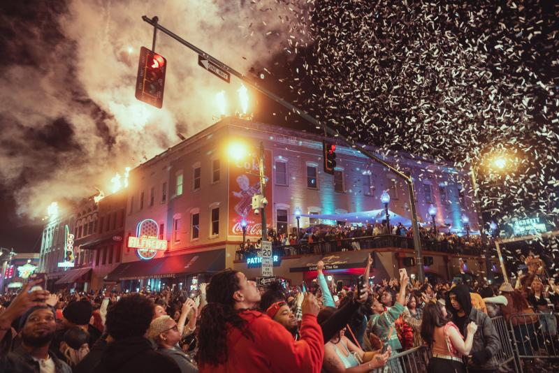
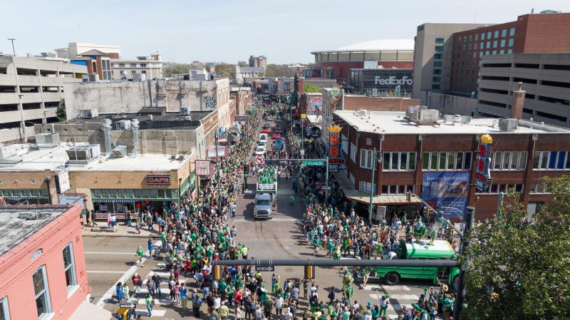

- A variety of stores such as the Beale Sweets Sugar Shack and the A.Schwab offer sweets, souvenirs, food, and more. Most places on this street serve barbecue, one of Memphis' well known foods!
- Have a drink in one of the bars such as the Tin Roof Memphis or the People's on Beale and catch music from Memphis musicians!
 - Bring in the new year with a bang at our New Year's Celebration!
Or join us as we celebrate St. Patrick's Day in our Silky Sulivan St. Patrick's Parade!